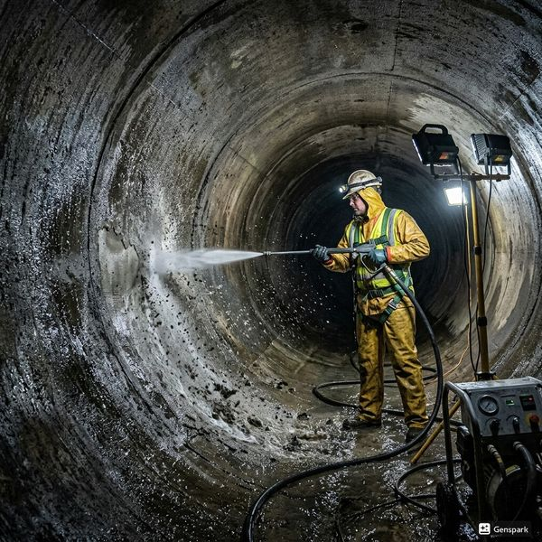
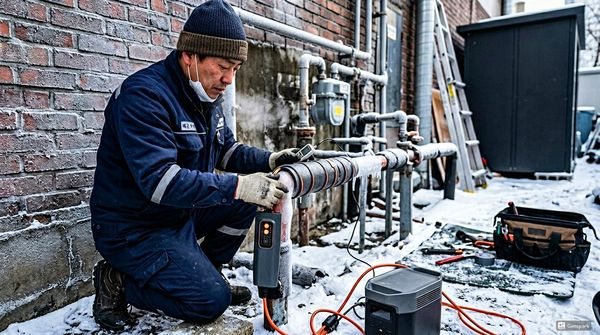

제우스시설관리 | 2025년 4월

건물의 배관도 수명이 있습니다. 배관 종류에 따라 수명이 다르며, 노후 배관을 방치하면 누수, 막힘, 수질 오염 등 심각한 문제가 발생합니다.
📌 아연도금강관(백관) - 15~20년 (1990년대 이전 건물에 많음, 녹 발생 심함)
📌 동관 - 20~30년 (급수관에 사용, 녹색 녹 발생 가능)
📌 PVC관 - 30~50년 (현재 가장 보편적, 충격에 약함)
📌 PE관 - 50년 이상 (최신 배관, 유연성 좋음)
📌 스테인레스관 - 50년 이상 (위생적, 비용 높음)
아래 항목 중 2개 이상 해당되면 전문 점검을 받으시길 권장합니다:
☐ 수도꼭지에서 붉은색/갈색 물(녹물)이 나온다
☐ 수압이 예전보다 눈에 띄게 약해졌다
☐ 배수구에서 악취가 자주 난다
☐ 하수구/배수구가 자주 막힌다 (연 2회 이상)
☐ 벽이나 천장에 물 얼룩/곰팡이가 있다
☐ 수도요금이 갑자기 많이 나왔다
☐ 건물이 20년 이상 되었고 배관 교체 이력이 없다
☐ 배관 연결부에서 물방울이 맺힌다
배관 점검은 관로 내시경 카메라와 관로탐지기를 보유한 전문 업체에 의뢰해야 합니다. 육안으로는 배관 내부 상태를 알 수 없으며, 내시경 카메라로 배관 내부를 직접 확인해야 정확한 진단이 가능합니다.
제우스시설관리는 내시경 진단 후 배관 상태를 영상으로 보여드리고, 청소만으로 충분한지, 부분 교체가 필요한지 정확히 안내합니다. 무료 출장 점검을 제공하니 부담 없이 문의하세요.
